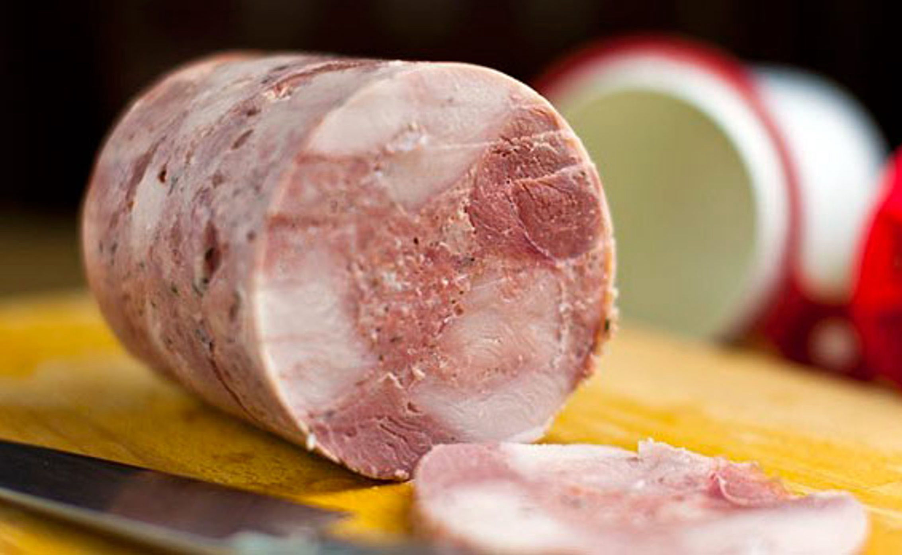
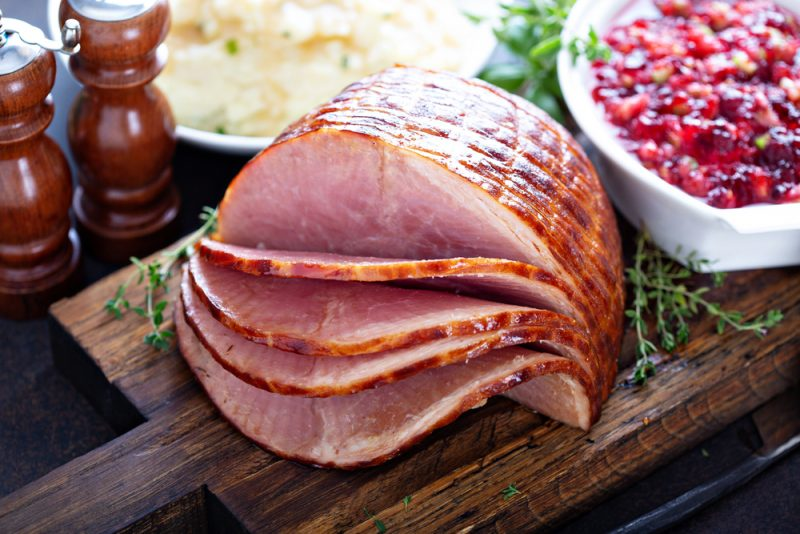
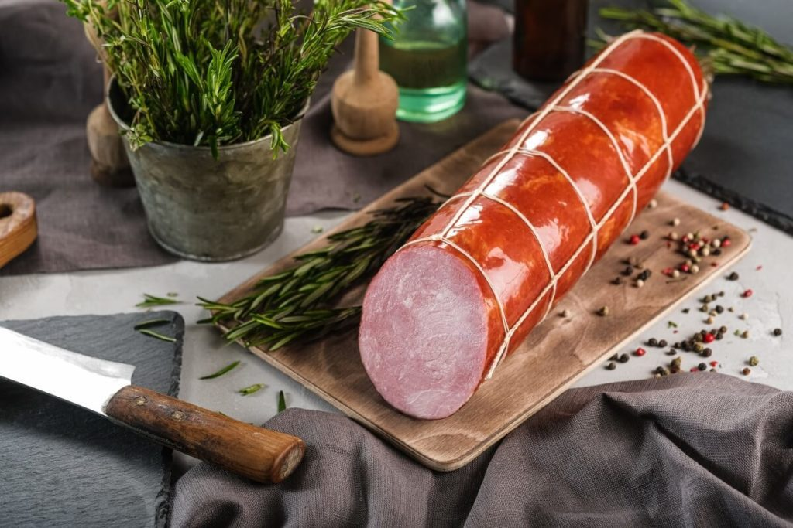
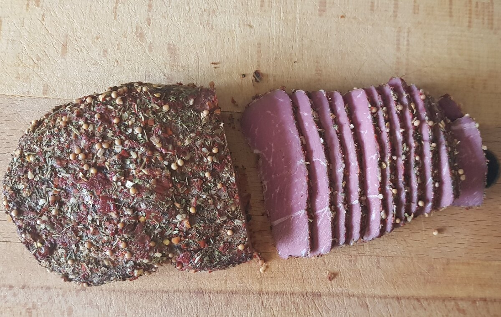
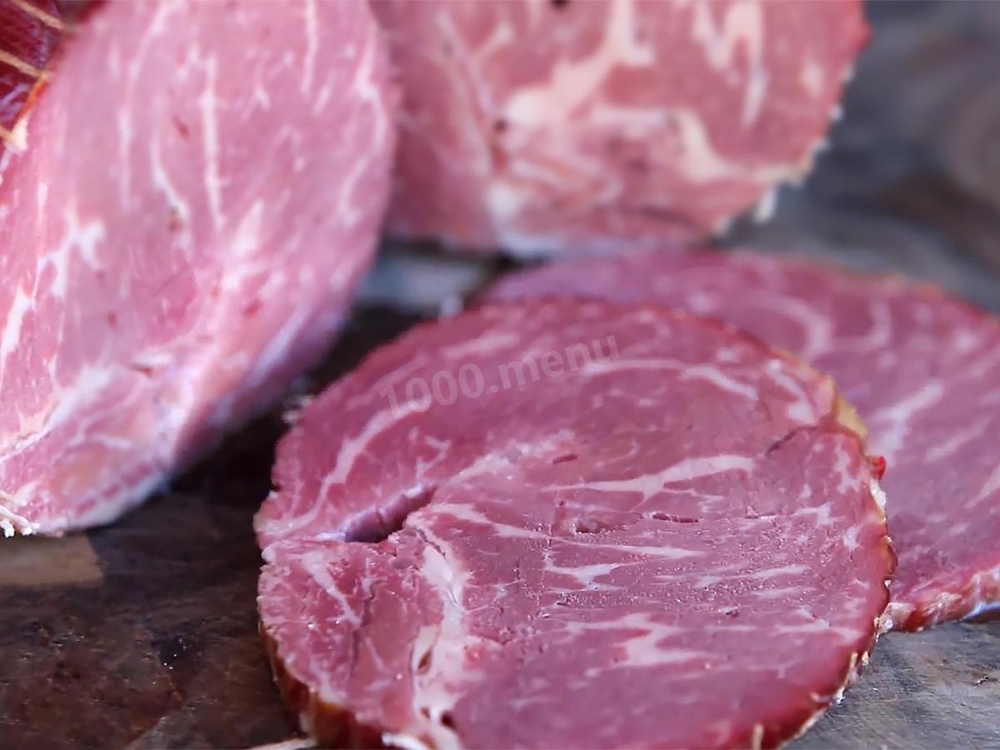
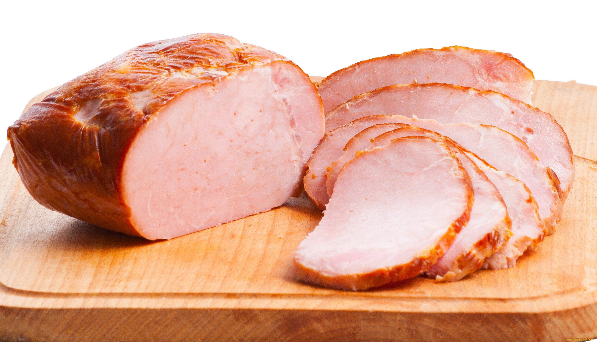
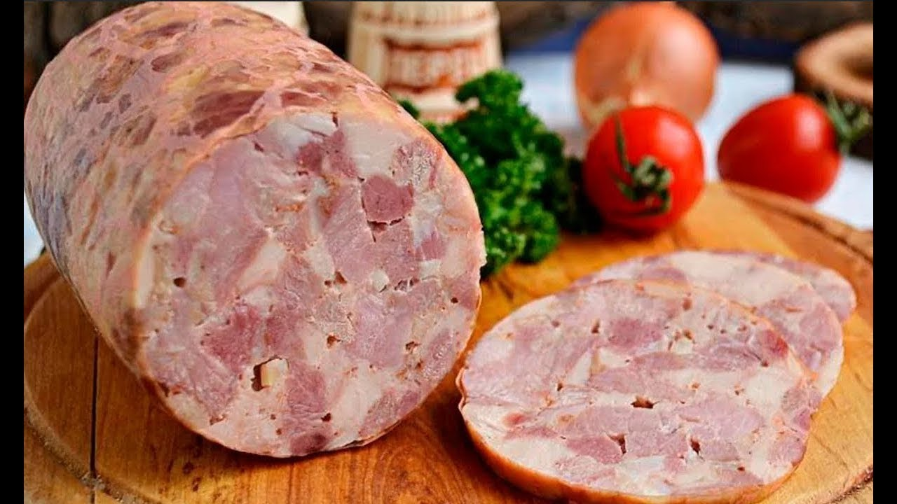
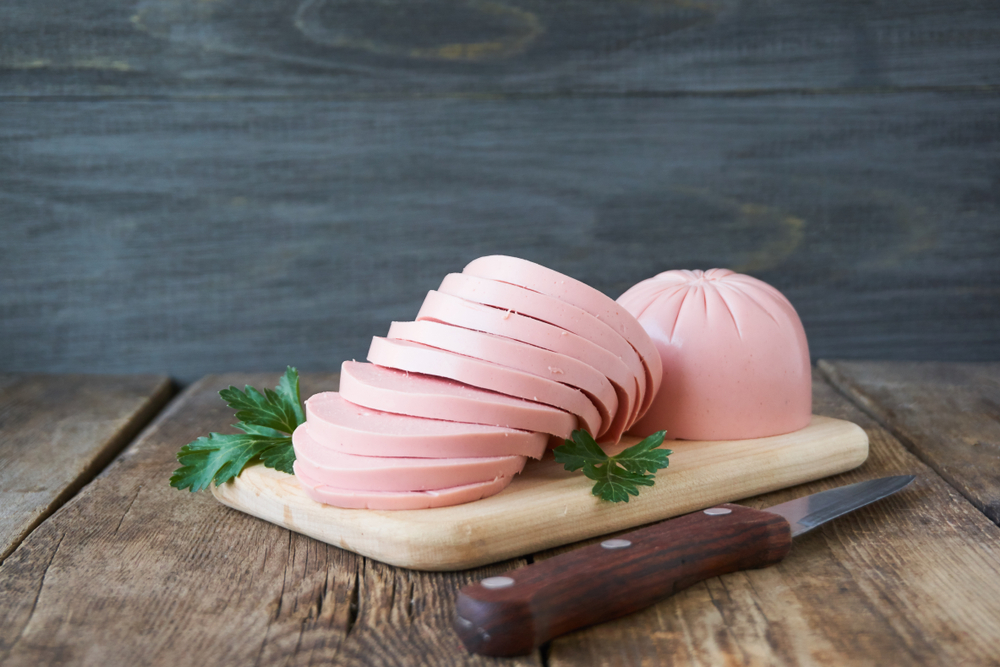
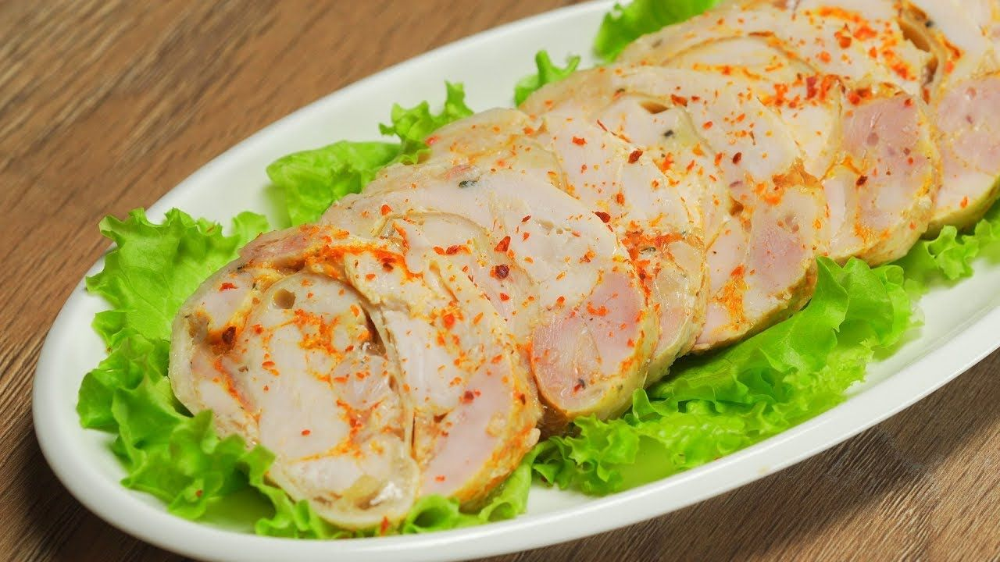

Руководство по эксплуатации
Перед первым использованием ветчинницы тщательно вымойте ее в теплой мыльной воде или в посудомоечной машине, тщательно промойте и высушите.
- Подготовьте ингредиенты в соответствии с рецептом.
- Установите корпус изделия на ровную твердую поверхность, равномерно заполните корпус ветчинницы подготовленными ингредиентами и тщательно их утрамбуйте, чтобы не оставалось пустот.
- Вставьте нажимную пластину с прикрепленной пружиной. Нажимная пластина должна давить на мясо, а пружина должна быть направлена вверх. Закройте ветчинницу крышкой и установите термометр.
- Поставьте ветчинницу в кастрюлю с водой. Уровень воды должен быть выше или такой же, как уровень ингредиентов внутри ветчинницы.
- Начните приготовление в соответствии с рецептом. Во время приготовления используйте термометр из комплекта, чтобы следить за готовностью продукта.
- По окончании приготовления остудите ветчинницу до комнатной температуры, после чего уберите в холодильник минимум на 3 часа.
- Будьте осторожны! После приготовления корпус ветчинницы очень горячий.
- Не разбирайте ветчинницу, пока ее содержимое полностью не остынет.
- После того как продукт остыл, аккуратно извлеките готовый продукт.
- Чтобы легче было извлечь готовый продукт, обдайте корпус ветчинницы кипятком.
Уход за изделием
- Сразу после использования промойте корпус и съемные части изделия теплой водой с мягким моющим средством для мытья посуды (можете воспользоваться посудомоечной машиной).
- Не мойте термометр в посудомоечной машине.
Рецепты
Буженина
 Ингредиенты:
Ингредиенты:
- Свинина (шея) - 1 кг
- Чеснок - 10 г
- Горчица зернистая - 10 г
- Соль, специи
- Промыть мясо.
- Сделать в мясе надрезы и нашпиговать их чесноком.
- Натереть мясо солью, горчицей, специями и оставить мариноваться на 3 часа.
- Выложить мясо в ветчинницу.
- Ветчинницу поместить в кастрюлю, наполненную водой. Уровень воды должен быть выше или такой же, как уровень ингредиентов внутри ветчинницы.
- Готовить 2 часа при температуре от 75 до 85°C.
Ветчина "Украинская"
 Ингредиенты:- Говядина (филе) - 700 г
- Сало свиное - 130 г
- Желатин (сухой) - 15 г
- Соевый соус - 5 мл
- Соль, специи
- Промыть мясо.
- Пропустить мясо через мясорубку.
- Сало нарезать маленькими кубиками.
- Все тщательно смешать и выложить в ветчинницу.
- Ветчинницу поместить в кастрюлю, наполненную водой. Уровень воды должен быть выше или такой же, как уровень ингредиентов внутри ветчинницы.
- Готовить 2,5 часа при температуре от 75 до 85°C.
Ветчина "Купеческая"
 Ингредиенты:- Говядина (филе) - 400 г
- Свинина (филе) - 400 г
- Фарш (домашний) - 300 г
- Яйцо куриное - 50 г (1 шт.)
- Желатин (сухой) - 15 г
- Чеснок - 10 г
- Сухое молоко - 10 г
- Мускатный орех - 5 г
- Соль, специи
- Промыть мясо.
- Нарезать мясо крупными кубиками.
- Измельчить чеснок и тщательно смешать все ингредиенты вместе.
- Выложить фарш в ветчинницу.
- Ветчинницу поместить в кастрюлю, наполненную водой. Уровень воды должен быть выше или такой же, как уровень ингредиентов внутри ветчинницы.
- Готовить 2 часа при температуре от 75 до 85°C.
Ветчина "Царская"
 Ингредиенты:- Свинина (филе) - 500 г
- Говядина (филе) - 500 г
- Желатин (сухой) - 15 г
- Чеснок - 6 г
- Мускатный орех - 3 г
- Перец черный, соль
- Мясо промыть.
- Мясо крупно нарезать и измельчить чеснок.
- Тщательно перемешать все ингредиенты.
- Выложить мясо в ветчинницу.
- Ветчинницу поместить в кастрюлю, наполненную водой. Уровень воды должен быть выше или такой же, как уровень ингредиентов внутри ветчинницы.
- Готовить 2 часа при температуре от 75 до 85°C.
Ветчина из говядины и судака
 Ингредиенты:- Говядина (филе) - 750 г
- Судак (филе) - 300 г
- Лук репчатый - 75 г
- Оливки - 50 г
- Сельдерей (стебель) - 50 г
- Спаржа - 30 г
- Желатин (сухой) - 15 г
- Соль, специи
- Мясо и рыбу промыть.
- Мясо, рыбу и лук пропустить через мясорубку. В фарш добавить оливки, соль, специи, желатин, перемешать до однородной массы.
- Нарезать сельдерей вдоль. Выложить фарш в ветчинницу.
- Нашпиговать фарш сельдереем и спаржей.
- Ветчинницу поместить в кастрюлю, наполненную водой. Уровень воды должен быть выше или такой же, как уровень ингредиентов внутри ветчинницы.
- Готовить 2,5 часа при температуре от 75 до 85°C.
Ветчина из говядины со сливками
 Ингредиенты:- Говядина (филе) - 1,3 кг
- Сливки (22%) - 90 мл
- Масло сливочное - 50 г
- Лук зеленый - 20 г
- Чеснок - 20 г
- Желатин (сухой) - 15 г
- Соевый соус - 5 мл
- Соль, специи
- Мясо промыть и нарезать маленькими кубиками.
- Измельчить лук и чеснок. Масло растопить.
- Тщательно все смешать и оставить мариноваться на 2 часа.
- Выложить мясо в ветчинницу.
- Ветчинницу поместить в кастрюлю, наполненную водой. Уровень воды должен быть выше или такой же, как уровень ингредиентов внутри ветчинницы.
- Готовить 2,5 часа при температуре от 75 до 85°C.
Классическая ветчина
 Ингредиенты:- Свинина - 800 г
- Мясной фарш - 300 г
- Яйцо - 1 шт.
- Сухое молоко - 10 г
- Чеснок - 20 г
- Желатин - 15 г
- Соль, специи
- Мясо промыть.
- Нарезать мясо маленькими кубиками. Измельчить чеснок.
- Перемешать все ингредиенты до однородности.
- Выложить мясо в ветчинницу.
- Ветчинницу поместить в кастрюлю, наполненную водой. Уровень воды должен быть выше или такой же, как уровень ингредиентов внутри ветчинницы.
- Готовить 2 часа при температуре от 75 до 85°C.
Ветчина с курицей и индейкой
 Ингредиенты:- Филе индейки - 750 г
- Куриное филе - 375 г
- Яйца - 1 шт.
- Желатин - 8 г
- Соль, специи, мускатный орех
- Мясо промыть.
- Филе индейки и курицы нарезать маленькими кубиками.
- Добавить остальные ингредиенты и тщательно перемешать.
- Выложить мясо в ветчинницу.
- Ветчинницу поместить в кастрюлю, наполненную водой. Уровень воды должен быть выше или такой же, как уровень ингредиентов внутри ветчинницы.
- Готовить 2 часа при температуре от 75 до 85°C.
Колбаса "Докторская"
 Ингредиенты:- Говядина - 200 г
- Свинина - 600 г
- Грудинка - 480 г
- Яйцо - 1 шт.
- Соль, специи
- Мясо промыть.
- Пропустить мясо через мясорубку и переложить в блендер.
- Взбить фарш в блендере со всеми ингредиентами.
- Выложить фарш в ветчинницу.
- Ветчинницу поместить в кастрюлю, наполненную водой. Уровень воды должен быть выше или такой же, как уровень ингредиентов внутри ветчинницы.
- Готовить 2 часа при температуре от 75 до 85°C.
Куриный рулет
 Ингредиенты:- Куриное филе - 400 г
- Куриные бедрышки - 800 г
- Желатин - 15 г
- Чеснок - 6 г
- Соль, специи
- Мясо промыть.
- Мясо мелко порубить.
- Перемешать тщательно все ингредиенты.
- Выложить мясо в ветчинницу.
- Ветчинницу поместить в кастрюлю, наполненную водой. Уровень воды должен быть выше или такой же, как уровень ингредиентов внутри ветчинницы.
- Готовить 2 часа при температуре от 75 до 85°C.